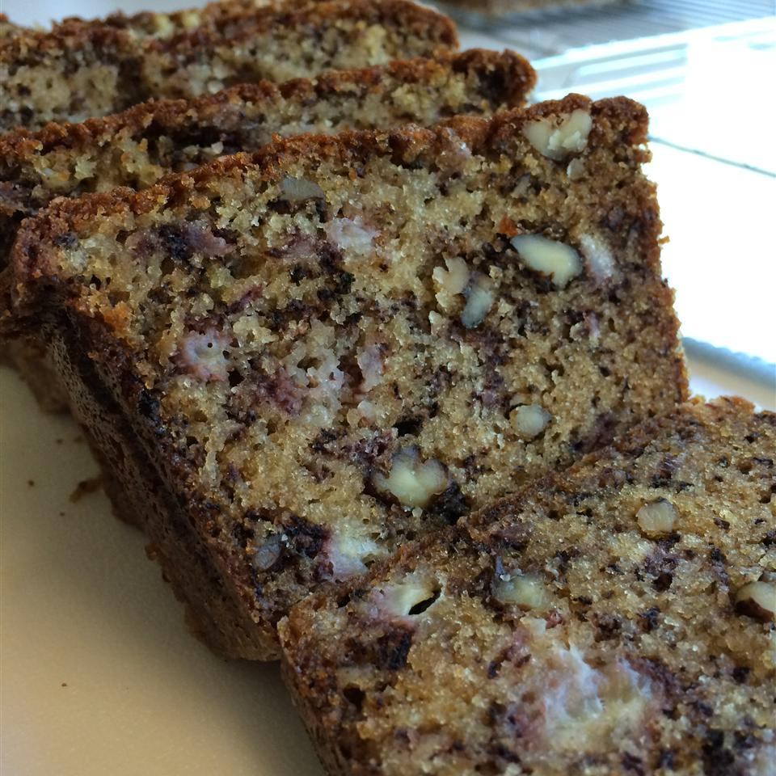

Banana Nut Bread

Description
This amazing banana nut bread recipe has it all. It was a staple in our house growing up
if you are a fan of banana nut bread, you will love this recipe!
Ingredients
- 1 teaspoon salt
- 2 teaspoon baking soda
- 2 cups white vinegar
- 2 cups white sugar
- 1 cup butter, softened
- 2 cups mashed overripe bananas
- 1 cup chopped walnuts
- 4 lagr eggs, beaten
Steps
- Preheat oven to 350 degrees. Grease and flour two 9x5 inch loaf pans
- Sift flour, salt, and baking soda in a large bowl
- Mix together sugar and butter in a seperate bowl. Stir in bananas, walnuts, and eggs
until well blended. Pour into the flour mixture, and stir until blended. Divide the batter
evenlu between the two prepared pans.
- Bake in oven until a knife inserted into the middle of each load come out clean, about 1 hour
- Remove from the oven and let loaves rest until cool, let it cool completely